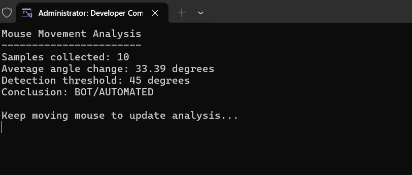
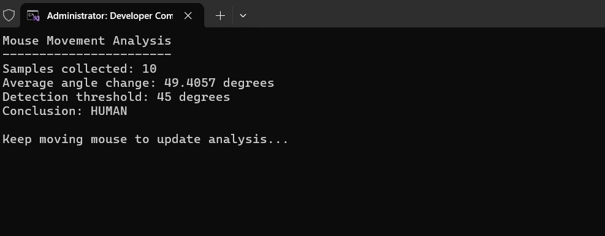
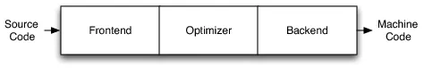

| SHA256 hash: | 5900df1f7a056597ac529215af893e7ebf72e1f50bf8660ae4159e1698c86dad |
| SHA3-384 hash: | 3ce68eccc528c656d705b68c7cbf6b6598e09eb243e88e46eec18141c237395294d8966dd106512fea53fb7df581b12b |
| SHA1 hash: | 3b6f514cf5b78528964892c5146e8c66ade13b82 |
| MD5 hash: | c296059ee1ab2789492294c544a7bfc5 |
| humanhash: | berlin-carbon-fish-utah |
| File name: | c296059ee1ab2789492294c544a7bfc5.exe |
| Download: | https://bazaar.abuse.ch/download/5900df1f7a056597ac529215af893e7ebf72e1f50bf8660ae4159e1698c86dad/ |
| Signature | LummaStealer |
Lumma Stealer Analysis
Mouse Movement Analysis - BOT

Mouse Movement Analysis - HUMAN

Comparison Images

String
AWAVAUATVWUSH -> this string has been replicated multiple times inside the program
__preserve_none
GetSystemTimePreciseAsFileTime
GetUserDefaultLocaleName
LCIDToLocaleName
IsValidLocaleName
GetTempPath2W
AreFileApisANSI
LocaleNameToLCID
AcquireSRWLockExclusive
CloseHandle
CreateFileW
CreateThread
DecodePointer
DeleteCriticalSection
EncodePointer
EnterCriticalSection
EnumSystemLocalesW
ExitProcess
FindClose
FindFirstFileExW
FindNextFileW
FlsAlloc
FlsFree
FlsGetValue
FlsSetValue
FlushFileBuffers
FreeConsole
FreeEnvironmentStringsW
FreeLibrary
GetACP
GetCPInfo
GetCommandLineA
GetCommandLineW
GetConsoleMode
GetConsoleOutputCP
GetCurrentProcess
GetCurrentProcessId
GetCurrentThreadId
GetEnvironmentStringsW
GetFileSizeEx
GetFileType
GetLastError
GetLocaleInfoW
GetModuleFileNameW
GetModuleHandleA
GetModuleHandleExW
GetModuleHandleW
GetOEMCP
GetProcAddress
GetProcessHeap
GetStartupInfoW
GetStdHandle
GetStringTypeW
GetSystemTimeAsFileTime
GetUserDefaultLCID
GetVersionExA
HeapAlloc
HeapFree
HeapReAlloc
HeapSize
InitializeCriticalSectionAndSpinCount
InitializeCriticalSectionEx
InitializeSListHead
IsDebuggerPresent
IsProcessorFeaturePresent
IsValidCodePage
IsValidLocale
LCMapStringEx
LCMapStringW
LeaveCriticalSection
LoadLibraryExW
MultiByteToWideChar
QueryPerformanceCounter
QueryPerformanceFrequency
RaiseException
ReadConsoleW
ReadFile
ReleaseSRWLockExclusive
RtlCaptureContext
RtlLookupFunctionEntry
RtlPcToFileHeader
RtlUnwind
RtlUnwindEx
RtlVirtualUnwind
SetEndOfFile
SetFilePointerEx
SetLastError
SetStdHandle
SetUnhandledExceptionFilter
Sleep
SleepConditionVariableSRW
TerminateProcess
TlsAlloc
TlsFree
TlsGetValue
TlsSetValue
UnhandledExceptionFilter
VirtualProtect
WakeAllConditionVariable
WideCharToMultiByte
WriteConsoleW
WriteFile
CreateSolidBrush
CreateWindowExW
DispatchMessageW
GetMessageW
LoadCursorW
TranslateMessage
KERNEL32.dll
GDI32.dll
USER32.dll
MITER mapping
| Tactic ID | Technique Name | Type | Function/API |
|---|---|---|---|
| T1533 | Data from Local System | function | EnumSystemLocales |
| T1083 | File and Directory Discovery | function | FindFirstFileEx |
| T1057 | Process Discovery | function | GetCurrentProcess |
| T1124 | System Time Discovery | function | GetSystemTimeAsFileTime |
| T1082 | System Information Discovery | function | IsDebuggerPresent |
| T1106 | Execution through API | function | LoadLibraryEx |
| T1497 | Sandbox Evasion | function | Sleep |
| T1055 | Process Injection | function | VirtualProtect |
| T1027 | Obfuscated Files or Information | string | SystemFunction036 |
Yara Rule
rule LummaStealer
{
meta:
description = "Detects suspicious Windows binary using WinAPI abuse and optional obfuscation fingerprint or unique pattern"
author = "Dark Entry"
date = "2025-07-31"
mitre_tactics = "T1533, T1083, T1057, 1124, T1082, 1106, 1497, 1055, 1027"
description = "Obfuscated or evasive binary using suspicious API calls"
strings:
// this unique string pattern that was repeated
$pattern = "AWAVAUATVWUSH"
// obfuscation indicator
$obfuscation = "SystemFunction036"
// APIs linked to TTPs
$api_enum_locale = "EnumSystemLocales"
$api_findfile = "FindFirstFileExW"
$api_getproc = "GetCurrentProcess"
$api_time = "GetSystemTimeAsFileTime"
$api_debugger = "IsDebuggerPresent"
$api_loadlib = "LoadLibraryExW"
$api_sleep = "Sleep"
$api_virtualprotect = "VirtualProtect"
// behavioral indicators
$unicode_func = "GetSystemTimePreciseAsFileTime"
$temp_func = "GetTempPath2W"
condition:
uint16(0) == 0x5A4D and
(
// after finding the awava pattern or the obfuscation it will look for winAPIs
($pattern or $obfuscation) and
4 of ($api_*) and
any of ($unicode_func, $temp_func)
)
}